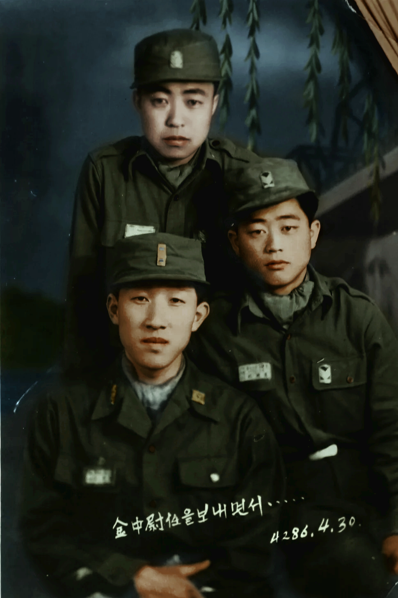
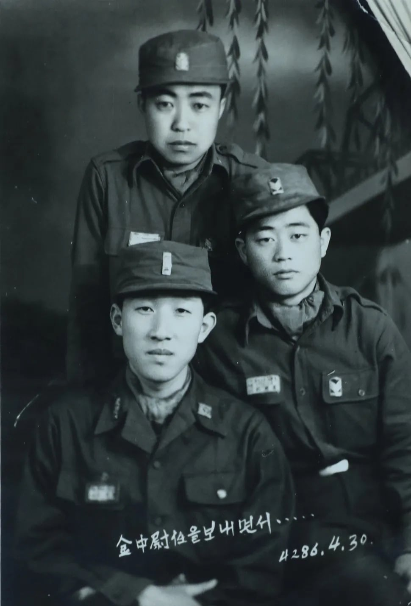

국군의 날 기념으로 광복군 출신 대한민국 육군 대위 김영관 (맨 앞쪽 아래) 지사님의 사진을 컬러로 복원했습니다.
+ 참고로 현재 생존중이신 독립유공자 세 분 중 한 분이십니다.

원본 흑백사진

국군의 날 기념으로 광복군 출신 대한민국 육군 대위 김영관 (맨 앞쪽 아래) 지사님의 사진을 컬러로 복원했습니다.
+ 참고로 현재 생존중이신 독립유공자 세 분 중 한 분이십니다.

원본 흑백사진
단군기원입니다. 서력기원으로 1953년입니다
전쟁중 사진이네요..
맞습니다....
오 그렇구나 복원력이 상승하는 느낌. 첫번째 사진 보고 그냥 원본 사진인줄
감사합니다!
단기 보니까 생각난건데 쌍팔년도가 1988년이 아니라 단기로 4288년인 1955년이라더라
맞습니다!
그나저나 묘하게 맨 뒤에 계신분.. 이상하게 주은래 총리 느낌이..
올ㅋ

ㄷㄷ
와 이건 처음 알았네
뭔가 옆생활관 가면 있을거같이 생겼어...
그런가요? ㄷㄷ
와 지금보니까 그냥 애기들이네..... 하.. 전쟁..
업스케일이라도 좀 해라
이런거 한땀 한땀 컬러 작업했던
개붕이 있던거 같은데...
그게 작성자임
어..그렇네?
분명 킬러였는데
굿
4286은 어떤 연도 표기로 한거지